Solutions Q21 - 34
Contents
Solutions Q21 - 34#
Q22 answer#
(a) Considering equations 49, if the predators \(X\) do not die naturally then they will clearly consume all the prey \(Y\) and the predator population will rise smoothly to a constant value and the prey uniformly fall to zero. The condition \(k_3 \ll k_2Y\) ensures that the loss of the predator population \(X\) is negligible.
(b) Adding new loss terms to both species gives
Calculating the steady-state populations produces \(Y_e = X_e = 0\) as one possibility, as before, and the second steady-state is
The equilibrium prey population is \(Y_e\) and this is increased relative to the case when \(k_{22} = 0\) but \(X_e\), the predator equilibrium value, is decreased. This increase in prey population and decrease in predator, is the opposite of what is wanted if the prey is a pest, such as aphids, whose population is kept in check by predators such as ladybirds. Adding a pesticide that potentially kills everything, causes the prey (aphid) population to rise and this is sometimes called the Volterra effect.
The consequence of this is clear in the numerical calculations if, for example, \(k_{11} = 0.9,\; k_{22} = 0.2\), and giving the other rate constants the values quoted in the text. The predator is poisoned and its population periodically decreases almost reaching zero; the prey is also poisoned to a certain extent, but now, not predated, and this allows its population to remain relatively large compared to that without poisoning, Figures 19 and 39. Compare also the phase plane in Figure 39 with that in Figure 20.
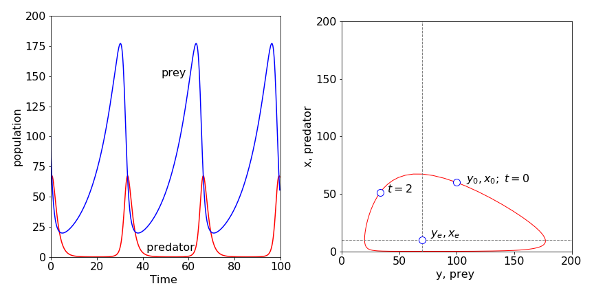
Figure 39. Populations of predator (red line) and prey when both are poisoned with rate constants \(k_{11} = 0.9 ,\; k_{22} = 0.2\). The prey population is increased substantially over that when no poisoning occurs and the predator population (dashed line) is greatly reduced. The nullclines are shown on the phase plane. The point is at t = 2 is shown the initial point is \(X_0, Y_0\).
Q23 answer#
\(\displaystyle Y_e= \frac{k_3}{k_2}, \; X_e=\frac{k_1}{k_2},\; \frac{dy}{dt}=k_1y(1-x),\; \frac{dx}{dt}=k_3x(y-1)\). Changing to reduced time produces
which can be solved as outlined in section 8.1.
Q24 answer#
The equilibrium points are the solutions to \((k_1-k_2X-k_dY)Y=0, \; (k_2Y-k_3)X=0\). Three sets of points are,
of which the last pair is the important one. The nullclines are the equations obtained when \(dY/dt = dX/dt = 0\), hence
The \(X\) nullcline depends on \(Y\) because of the \(Y^2\) term in the initial equation. Plotting the populations, calculated using the Euler method, Algorithm 15, shows that these oscillate but tend towards the last of the three equilibrium points and produce, after a while, constant populations, Fig. 11.40. The phase plane shows the populations spiraling to this point as if attracted to it. The spiraling occurs because the amplitude of the oscillations decrease with time and a single point is reached which is the equilibrium prey and predator population
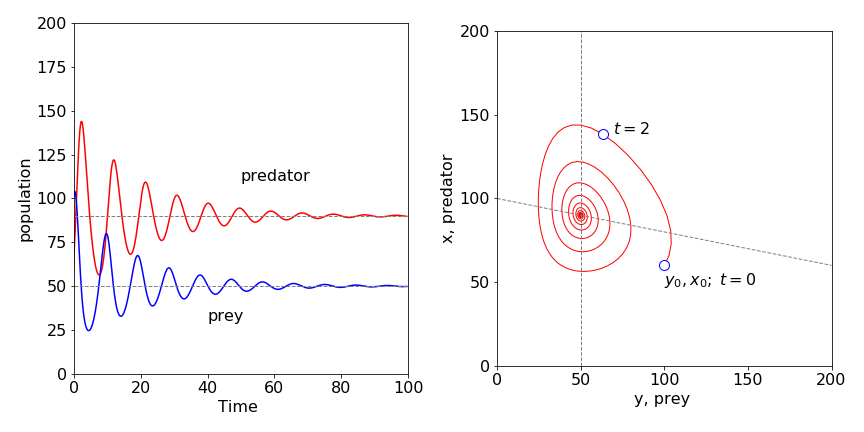
Figure 40; Predator - prey model with a limit on the prey population that is proportional to the square of its population. Left pane shows the time dependence and, right, the phase-plane with the nullclines crossing at the steady-state values. The point at \(t = 2\) shows the direction of change with time; \(X_0,\; Y_0\) is the initial point. \(X_0 =60,\;Y_0 =100,\;k_1 =1,\;k_2 =0.01,\;k_3 =0.5,\;k_d =0.002\).
To explain these results we argue as follows: In the absence of predators, the initial number of prey population is less than it could be with the amount of grass present and would therefore increase to a constant level. If there were no prey, the predators would die off with a rate constant \(k_3\).
In the actual situation, the predator eats the prey and the predator population increases and shortly after this, the prey population maximizes and then falls due to predation. The predator population also falls as prey becomes scare, because predators die by starvation. The prey population now begins to recover, predators being scarce for the time being; however, it can only increase somewhat because of the limited food. The predator then starts to catch more prey because they are now more numerous, and this limits the prey’s population and the cycle repeats itself. However, the prey’s population is also limited by the amount of food (energy) available and it cannot fully recover. This limits the predator also, for if there are less prey then more predators will starve. This ‘damping’ causes the oscillations in population to become smaller and eventually they become insignificant. They are damped out, effectively, by the limited food supply, and a dynamic steady-state is reached.
Q26 answer#
(a) The rate equations are
(b) At Steady state either \(A=B=0\) or \(\displaystyle B_e=\frac{k_1-k_2}{k_3}, \;A_e=B_e\frac{k_4}{ k_2}\) and these are the equilibrium points. The \(B\) nullcline is the horizontal line with a value Be, the A nullcline is the straight line \(A = k_4B/k_2\).
(c) Using Algorithm 15 to integrate coupled equations, the following graphs, Figure 41, were produced with 1000 points in the integration
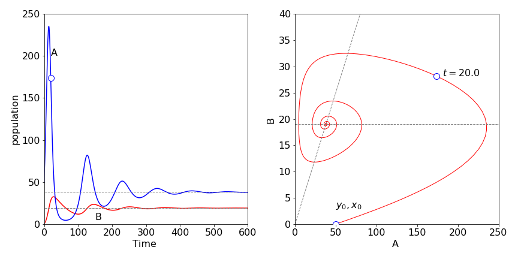
Figure 41. Behaviour of catalysed species in scheme 50. Left, vs time and, right, as the phase plane; \(k_1 = 0.2,\; k_2 = 0.01,\; k_3 =0.01,\;k_4 =0.02\) and \(A_0 =50,\;B_0 =0\). The unmarked point on \(A\) is at \(t = 20\) and is also shown in the phase plane.
(d) Initially, \(A\) is present,but not \(B\). More \(A\) is produced via the first reaction and therefore its concentration starts to increase exponentially. However, \(B\) is produced at a rate proportional to the amount of \(A\) present, and \(B\) also reacts with \(A\), reducing \(A\)’s concentration. The effect is to cause \(A\)’s concentration to reach a maximum and then fall.
The concentration of \(B\) also goes through a maximum because, not only is it produced from \(A\) and reacts with \(A\), but also it decomposes with rate constant \(k_4\). The concentration of \(A\) reaches a minimum while \(B\) is still decaying, and therefore the term \(k_3AB\) is small. This allows \(A\) to increase again, via the first reaction, which causes more \(B\) to form and another oscillatory event is produced. However, \(B\) is not zero at the start of this second event, and this limits the growth of \(A\). Eventually, a damped oscillating equilibrium is reached. The spiral in the phase plane occurs because the amplitude of \(A\) and \(B\) decreases with time. The nullclines pass through the maximum and minimum concentrations of each oscillation, at which point, the phase plane curve is horizontal or vertical.
Exercise: Investigate changing the rate constant \(k_1\) and \(k_4\).
Q27 answer#
(a) With the pendulum inverted the initial angle is \(\pi\), it is only possible to continue until about \(t = 30\) before the calculation fails using any of the the Euler methods. Failure is sudden and easily observed because the angle does not remain at \(\pi\). Using a python/numpy built in integrator produces better results , but inevitably this also fails.
Starting at \(\varphi_0 = 3.0\) rads, the Euler and Euler - Cromer methods continue to produce accurate data, similar to that in Figure 15, out to \(t = 1000\).
(b) The velocity vs time most obviously shows non-linearity, Figure 42 shows this, but it is only clear when the initial angle is almost \(\pi\) radians. The phase plane plot produced should be similar to that of Figure 14. The non-linear motion is apparent when the curves are not circles.
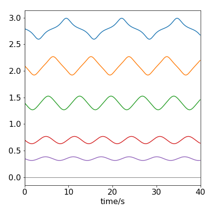
Figure 42. The velocity vs time of a pendulum with different starting angles in radians. The angles are 1, 2, 4, 6, 8 \(\times \pi/9\).
Q28 answer#
Reducing the equation of motion to two equations gives
which using algorithm 15 produces the plot shown in figure 43.
The time profile was calculated with the pendulum initially stationary at an angle of \(8\pi/9\) radians. The effect of the friction is clear; energy is not conserved in the pendulum and it eventually becomes stationary. This type of motion is called dissipative; the initial energy in the pendulum ends up as heat.
Exercise: When the initial velocity is large enough, 0.4 in this instance, the pendulum can swing over the top. Eventually it loses energy and cannot any longer do this; it then vibrates with decreasing amplitude until it comes to rest. Investigate this effect and convince yourself that rotation and damping occurs. The plot of angle vs time exceeds 180o so a correction is needed to constrain this to \(\pm\)180o. The formula \(\tan^{-1}( \sin(\varphi),\cos(\varphi) )180/\pi\) will do this.
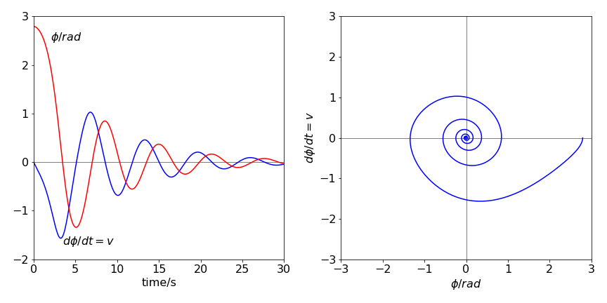
Figure 43. Left: The time profile of the angle (degrees) and angular velocity (dashed line), in rad s-1, of a damped pendulum. Right: The phase plane, angular velocity vs angle, with angle in radians.
Q29 answer#
(a) The equation is split into two parts, one describing the (angular) velocity \(v\), the other the rate of change of velocity or acceleration, and which are
One pair of equilibrium points when \(d\varphi/dt = dv/dt = 0\) are \(v = 0\) and \(\varphi = 0, \pm \pi\) which is the stationary position; \(\varphi\) could be \(\pi\) radians by supposing that the bar could be moved up against the shaft, which would then have to be infinitesimally thin.The other equilibrium point is \(v = 0\) and
In the case when the pendulum is long or \(\omega\) high, or both, then \(a/L\omega^2 \to 0\) and \(\varphi \to \pi/2\). When the opposite situation applies, \(a/L\omega^2 \to \infty\), then \(\varphi \to 0\) or \(\pi\). The first condition means that a long rod will rotate around the shaft in a horizontal plane with negligible vertical oscillation, whereas a short rod will tend to hang vertically. In between these cases, the rod will clearly oscillate up and down while rotating with the shaft.
The nullclines are \(a/L\omega^2 \to 0\) and \(\varphi \to \pi/2\) or zero. The phase plane is calculated from \(\displaystyle (\varphi,d\varphi/dt)\) which is \((\varphi, v)\)
Integrating
gives \(v\) as
The constant \(c\) can be calculated by defining an initial velocity \(v_0\) and angle \(\varphi_0\). Two limiting cases are plotted in Figure 44. The pendulum has different initial angles and zero initial angular velocity, except for the outer curve. The initial angles (in degrees) are from the inside out 22.5, 45, 90, 120 and 180, and \(a = 0.03,\; \omega = 1\) for the left pane and \(a=10,\;\omega =1\) for the right-hand pane.
The motion of a short rod, \(a/L \gt \omega^2\), is shown on the right of Figure 44 and is similar to that of a normal pendulum. The period of the pendulum, because it is short, is far faster than that of the shaft’s rotation, making the latter relatively unimportant. The curve for which the initial angle is \(\pi\) is the separatrix which only touches the axis when \(\varphi = \pm n\pi\) where \(n\) is an integer.
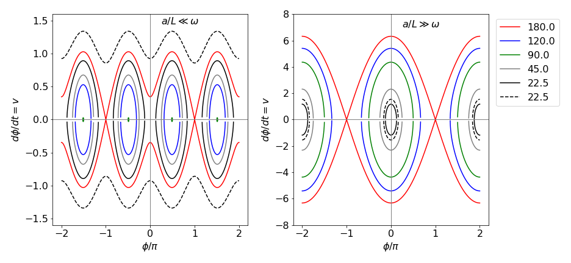
Figure 44 The phase plane in two different limits, the abscissa are plotted as \(\varphi/\pi\) and the ordinate as \(v = d\varphi/dt\). Left: The situation for a long rod \(a/L \ll \omega^2,\; a = 0.03, \;\omega = 1\). The initial angles, reading from the x-axis out, are, \(22.5, 45, 90, 120,180\), with an initial velocity of zero, solid lines, and one (dashed) line. If the initial angle is \(90\) degrees then \(v = 0\), which is a point on the x-axis, shown as green ovals. Right: The rod is now very short, \(a = 10, \; \omega = 1\) with the same initial angles but the dashed curve now has an initial velocity of 1. Notice that the angular velocity \(v\) is far larger when the rod is short.
On the left of figure 44, \(a/L\omega^2 \to 0\) and is the situation when the rod is very long. In this limit, the motion is governed by the rotation of the shaft because the long rod, thought of as a pendulum has a very long oscillation period. The curve for which the initial angle is \(\pi\) is the separatrix which only touches the horizontal axis when \(\varphi = \pm (2n + 1)\pi\) where \(n\) is an integer. This means that the rod is only instantaneously stationary in the vertical position. When the initial angle is \(\pi /2\) (or 90o) a long rod does not oscillate up and down as it rotates, and its vertical velocity is zero. When the initial angle is smaller or larger than \(\pi /2\), the rod suffers vertical oscillations as it rotates, and it does not matter whether it starts almost in a vertically up or down position, the motion is eventually the same: for example \(\varphi_0 = 7\pi/8\) or \(\pi/8\). The outer sinusoidal curve in the figure above corresponds to the rod freely rotating in the vertical plane as well as rotating about the shaft because it has an initial velocity of \(1\) and an initial angle of \(\pi/8\), which together, gives it enough energy to overcome the potential energy needed to invert the rod.
Q30 answer#
(a) When the angle of the rod from the vertical is small, then \(\sin(\varphi) \to \varphi - \varphi^3/6\) and \(\cos(\varphi) \to 1 -\varphi^2/2\). Because the angle is almost zero, the second terms are so small that they can be ignored making the equation of motion
which has the form of a simple harmonic oscillator with a frequency \(\omega' = \sqrt{a/L -\omega^2}\) . This produces the phase plane on the right of Figure 44.
(b) For motion around the initial angle, the sine and cosine have each to be expanded as a Taylor series about \(\varphi_0\). The general series expansion for a function \(f (x)\) about a point, is (see Chapter 5.6) \(\displaystyle f(a+x)=f(a)+f'(a)x+f''(a)\frac{x^2}{2!}+\cdots\) where \(f'\) is the first derivative, \(f''\) the second. The sine series is
and the cosine series
where \(\cos(\varphi_0)=a/(L\omega^2)\) and by Pythagoras \(\sin(\varphi_0)=\sqrt{1-(a/(L\omega^2)^2}\).
If the initial angle is small because \(a/L\) is small, the resulting equation is the same as in (a), because \(\sin(\varphi -\varphi_0) \to \varphi\) and \(\cos(\varphi -\varphi_0) \to 1\), if higher powers of \(\varphi\) are ignored.
(c) Assuming that this is not the case, then changing the angle to \(\varphi -\varphi_0\), gives
This is a bit of a trick, but is the same as rotating the axis of the pendulum by \(\varphi_0\), which cannot change anything, such as the energy or period, but makes the calculation simpler. Expanding the sine and cosine
Substituting for \(a/L = \omega^2 \cos(\varphi_0)\), greatly simplifies the equation
Simplifying, and ignoring the \(\varphi^2\) term, gives
which is the equation of a simple pendulum of frequency \(\omega \sin(\varphi_0)\) oscillating about \(\varphi_0\). If \(\varphi_0 = \pi/2\), then the frequency is \(\omega\), the same as that of the shaft; when \(\varphi_0 = 0\), the frequency is zero because the pendulum is either vertically up or down.
Q31 answer#
Splitting the equation into two produces angular velocity and acceleration as
With the parameters given, the ratio \(h\omega^2/\omega_0 = 30\), which means that the driving term, \(h\omega^2\cos(\omega t)\) is going to dominate the motion. As might be expected if \(h \to 0\) or \(\omega \to 0\) a normal pendulum’s motion is observed.
The time profile and phase plane produced are shown in Fig 45; 103 data points were used with the python built in integrator \(\mathtt{odeint(\cdots)}\) but the modified Euler or Runge-Kutta method, could also be used as in Algorithm 16.
The initial angle means that the pendulum is inverted starting at \(3\pi/4 \equiv 135\^\text{o}\), and when forced by the action of the piston this angle increases with time; the pendulum crosses the vertical at a time \(\approx\) 1.25 and only partly descends to the other side before re-crossing the vertical again; this motion repeats ad infinitum. The phase plane shows this oscillation about centred about \(\pi\) radians.
In this example, the pendulum is initially inverted but only to the extent of 135o. The piston’s frequency is ten times larger than that of the natural pendulum; therefore, the pendulum has hardly moved when the piston has descended by its full amount. This effectively imparts a rotation (torque) on the pendulum, closing the angle between the pendulum and the vertical by a small amount. (It is similar to the effect of starting your car and going forwards while a door is still open.) When the piston rises, the pendulum is forced slightly away from the vertical, but because it is now more vertical that it was, this angular motion is less than that produced when the piston dropped. The overall effect is to move the pendulum over the vertical.
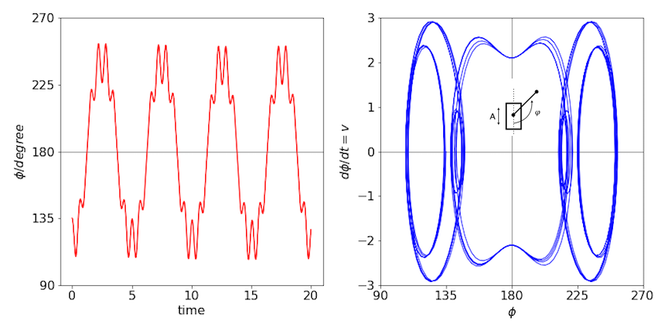
Figure 45. Left: The time profile of the pendulum’s angle. The fast piston’s motion is superimposed on that of the slow pendulum. Right: The phase plane.
Q32 answer#
Using the Runge - Kutta or modified Euler methods, two time profiles of the pendulum’s angle are shown in Figure 46 with parameters from (a). Notice the difference in scale. An angle greater than \(180 ^\text{o}\) means that the pendulum is rotating. The phase plane picture is that of an increasing spiral (bottom left). Notice the irregular but repeatable motion when the pendulum is stably swinging (top). The appearance of the phase plane shows whether the motion is stable. If it spirals outwards then the motion is unstable, one example of each is shown in the figures.
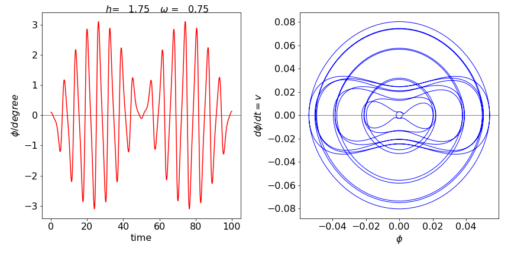 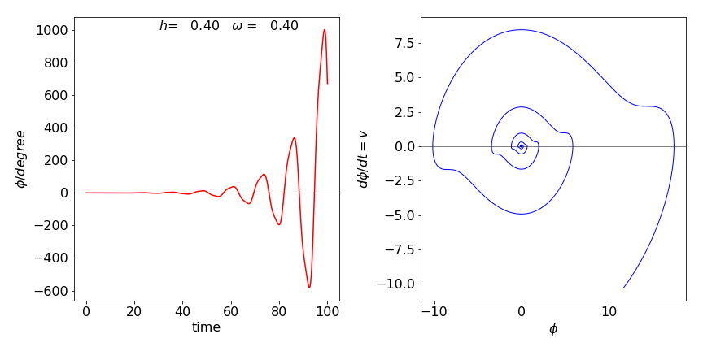
Figure 46. Stable and unstable motion described by the Mathieu equation. The angle vs time is shown and two phase planes (\(d\varphi/dt\), vs \(\phi\)) for stable motion (top) and unstable motion (bottom).
Q33 answer#
The stable or steady-state points are calculated when the derivatives of \(x\) and \(y\) are zero;
which produces \(x=a/5,\; y= 1+(a/5)^2\). The \(dx/dt=0\) nullcline is \(y=(a-x)(1+x^2)/4x\) and when \(dy/dt = 0\) the other is \(y = 1 + x^2\).
These are plotted in Figure 47 together with the trajectory starting at \(x = 3,\; y = 2\) with \(a = 8,\; b = 2\) and in the right hand figure with \(a = 10,\; b = 2\).The time profiles are also shown underneath their respective phase planes.
With the larger value, \(a = 10\), a limit-cycle is produced. This means that a persistent oscillation is produced from wherever on the phase plane the trajectory starts. This can be seen in the time profile, where the amplitude and period of the oscillations soon becomes constant. A (Hopf ) bifurcation occurs in the trajectory as it enters the limit-cycle; see Strogatz (1994) and also Haken (1978) for a detailed discussion of bifurcation. When \(a = 8\) no limit-cycle is possible and the oscillation in the concentrations, which are of constant period, die out and the trajectory spirals towards the equilibrium concentrations.
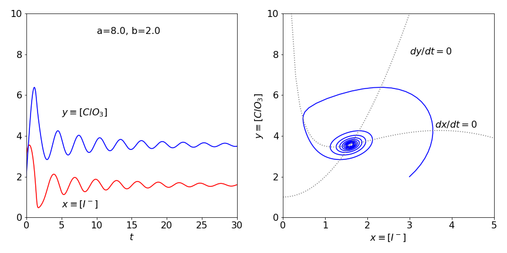 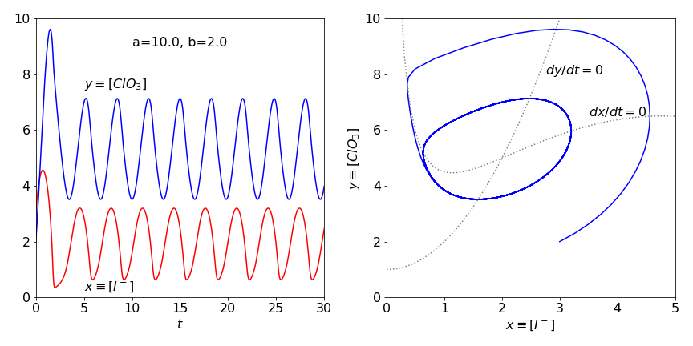
Figure 47 Time profiles and phase plane with \(a=8,\;b=2\) top and with \(a=10,\;b = 2\) bottom. The the direction of flow in the nullclines is anti-clockwise. The limit cycle is clear in the lower figure.